Why this app?
A Personal Story: The Reason Why
"I developed this app from a personal need. As someone who lives alone and has limited social contact, my biggest concern wasn't for myself, but for my little dog, Mara. She is the reason I go outside, the reason this app exists: to ensure she would never be left alone.
I am one of those people you sometimes read about in the newspaper, found in their home months later. Whether I'm found in that state isn't my problem at that moment. But ensuring my dog is rescued, is. This app is the answer to that question. It is my way of giving back to her. She keeps me alive, and I am building a system that guarantees her safety.
It's a tool built to provide a safety net, not just for me, but for anyone in a similar situation. It's a way to ensure that in an emergency, help is on the way for those who depend on us, whether they have two legs or four."
Both Mara and I could really use some support. If you're happy with this free app, consider offering a coffee or a bone...

The Core Idea: Independence, Secured
Living alone comes with a quiet, persistent worry: "What if something happened to me? How long would it be before someone knew?" For those who cherish their independence but acknowledge the reality of living solo, this question deserves a simple, reliable, and private answer.
I'm OK is your personal, automated safety net. It is an honest tool for peace of mind. It is not a tracker; it respects your privacy while discreetly watching over your well-being. It is designed for the independent spirit who wants to relieve their loved ones of worry, without sacrificing their autonomy.
Every day, at a time you choose, the app sends you a single, discreet notification. A simple tap on the "I'm OK" button is all it takes to confirm your well-being. If that confirmation doesn't happen, and only then, your personal, pre-defined emergency plan is set in motion.
How It Works: The Patient, Three-Stage System
The philosophy of I'm OK is reliability and the avoidance of false alarms. It is not built for speed, but for certainty.
- The Daily Check-in. You choose a fixed moment in your day, perhaps with your morning coffee. You receive a single notification. One tap on "I'm OK" is enough. The app then disappears back into the background.
- The Audible Reminder. Did you miss the first notification? Don't worry. The app knows that people forget their phones. After the first hour, it will only produce a discreet sound signal at intervals. No extra visual notifications to cause alarm. This is a built-in buffer, giving you hours to respond to a simple oversight.
- The Emergency Plan in Action. Only after a long period of unresponsiveness, a duration you control, does the emergency plan activate.
For Family and Friends: Shared Peace of Mind
Are you a son, daughter, or grandchild worried about a parent or grandparent who lives alone? "I'm OK" provides a non-intrusive way to ensure they are safe. It offers you a feeling of security without disturbing their cherished independence. By helping them set up the app, you will know that a reliable system is in place, watching over them when you can't.
How to use?
How does the I'm OK app work?
The I'm OK app is designed to ensure your safety by checking in with you daily at a set time. If you do not confirm in time, the app can automatically inform your contacts.
Setting up the daily check-in
Go to "Emergency Plan" to configure the app. Here you can set the following:
- Check-in time: Choose the time you want to receive a daily notification to confirm you are okay.
- Your name: Enter your name. This name is used in the messages sent to your contacts.
- Emergency Plan: Create an emergency plan that will be included in the messages. Here you can provide instructions such as "first call my mobile, then come by, and then call emergency services".
 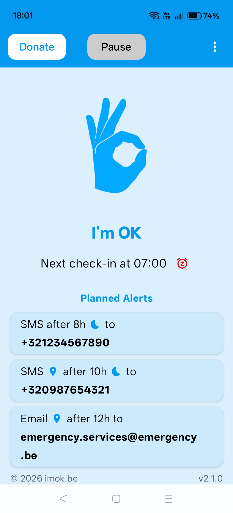
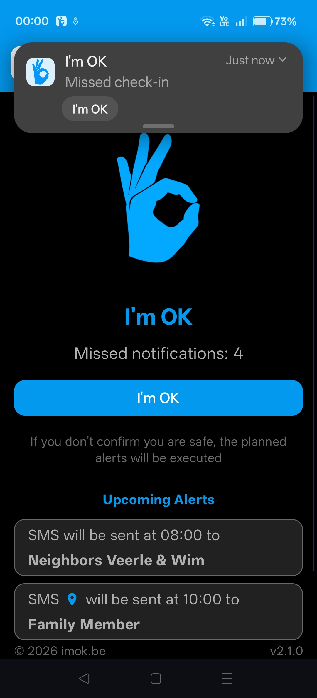
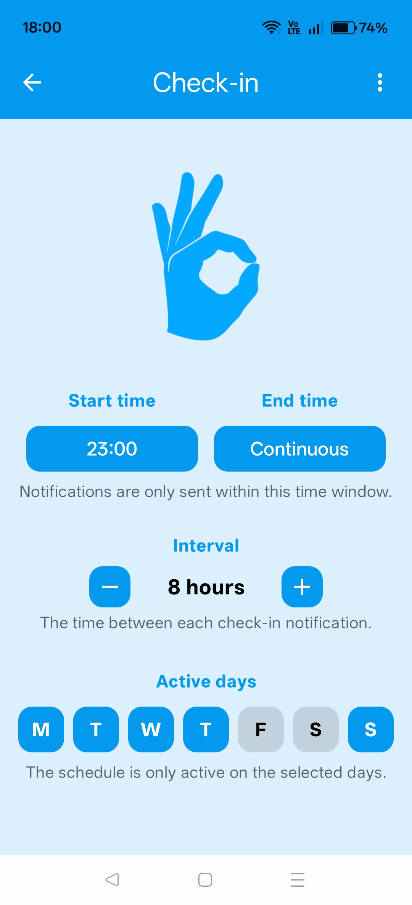
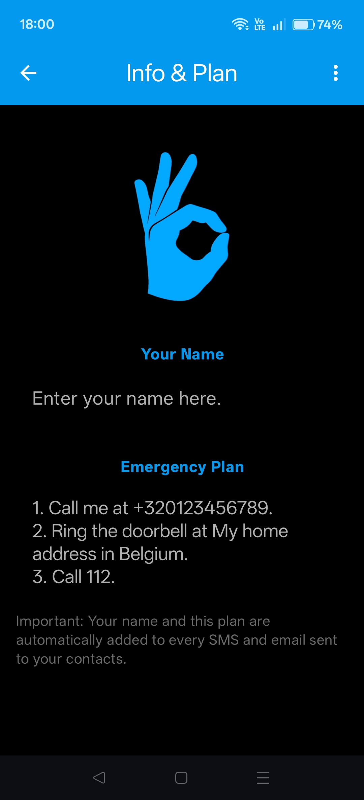
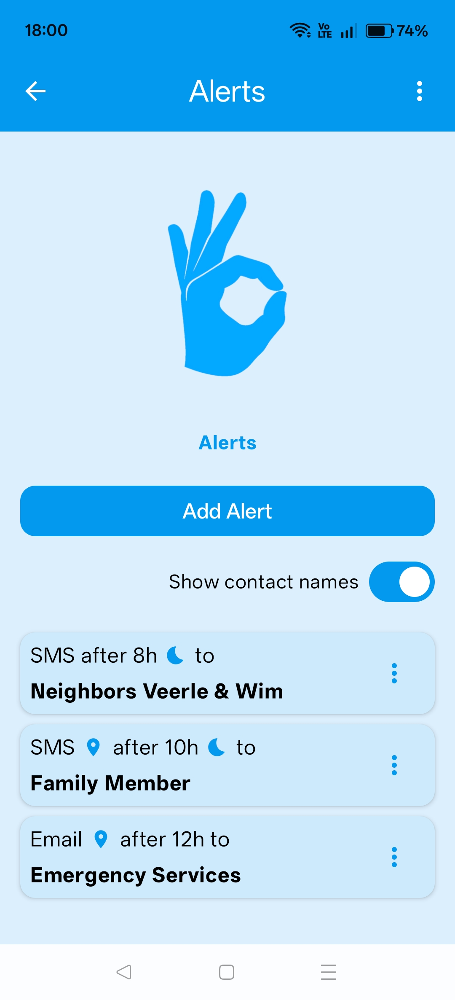
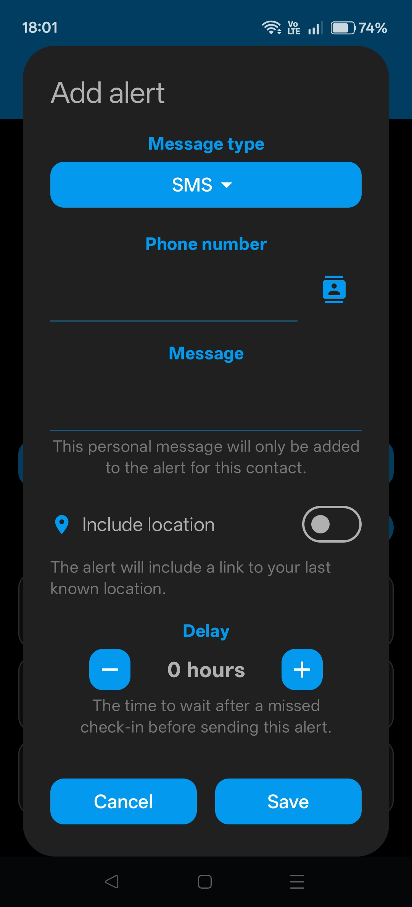
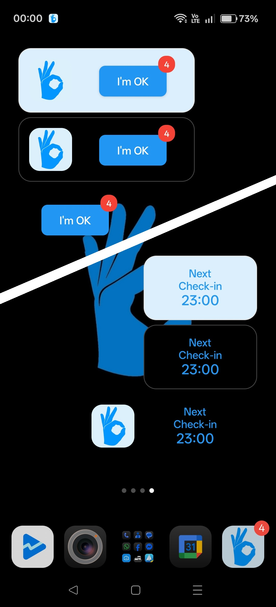
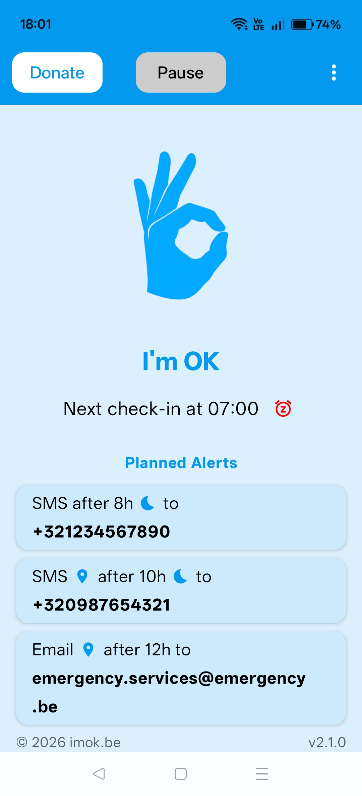
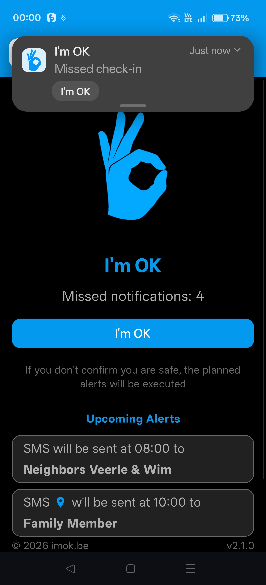
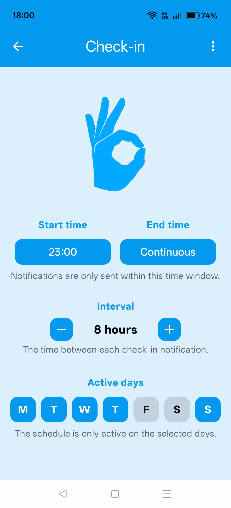
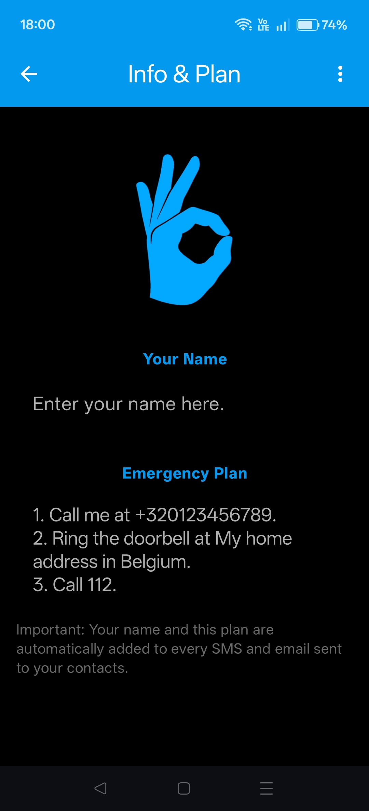
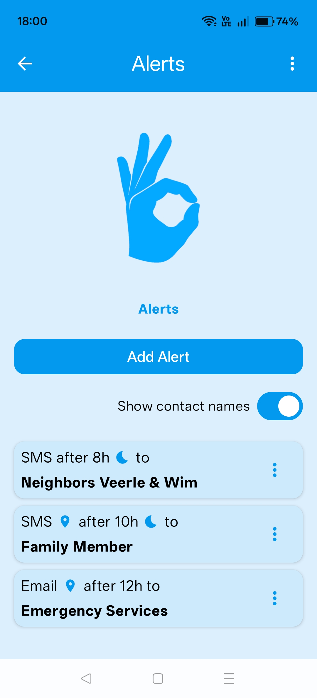
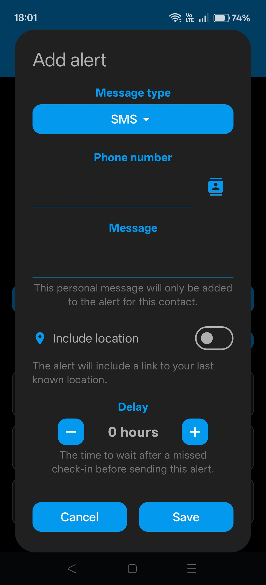
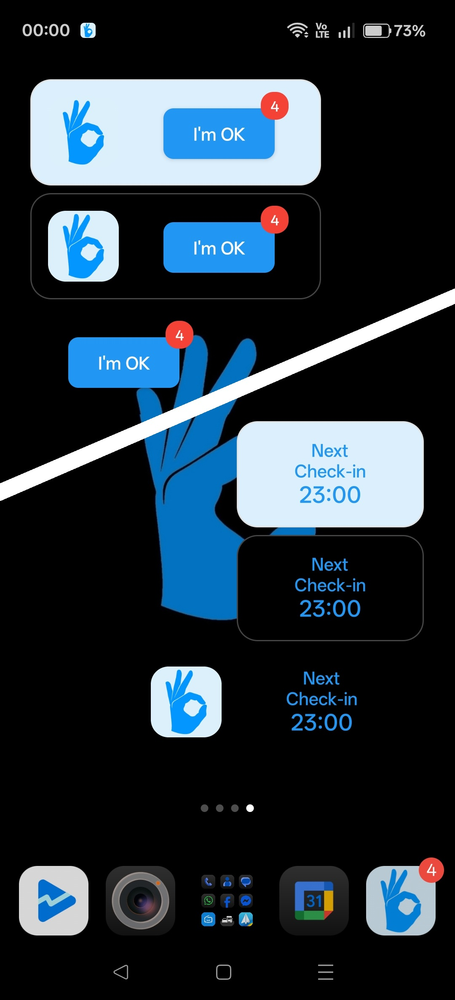
Setting up Actions
In the "Actions" section of the settings, you can define who should receive a message if you do not respond to the check-in. You can choose between SMS and email. Set the delay (in hours and minutes) after which the message should be sent. You can add multiple actions.
A Smart Approach to Setting Delays
The purpose of this app is to alert someone in a true emergency, not to send worrying messages unnecessarily. It is crucial to set your delays thoughtfully to build in a safety buffer. Give yourself enough time to confirm your status, even if you've forgotten your phone at home or are otherwise delayed.
Consider a layered approach to your emergency plan. For example:
- First delay (e.g., 12 hours after check-in): Notify a close neighbor for a quick wellness check.
- Second delay (e.g., 18 hours): Alert a family member who lives further away.
- Third delay (e.g., 24 hours): Contact emergency services as a final step.
What happens if you miss a check-in?
If you miss your daily check-in, the app's alert system is activated. The app will begin to play an audible reminder every hour and will continue to do so until you confirm that you are okay.
Crucially, no actions will be sent if you confirm your status before the delay of your first action has passed. The system is designed to give you ample time to respond and avoid false alarms.
If you do not confirm within the configured time, the app will proceed to execute your predefined actions. Your contacts will then receive the messages you have prepared, including your emergency plan.
Privacy & Permissions:
Data Storage
All data you enter in the I'm OK app is stored exclusively locally on your device. The app does not require an internet connection for its core functionalities and does not send your personal data anywhere. The stored data includes:
- Settings: Your name, the check-in time, your emergency plan, and the configured actions (SMS/email) are stored locally.
- Status Information: The app locally tracks when the last successful check-in was and if any notifications have been missed.
Required Permissions
To function correctly, the I'm OK app requires the following permissions:
- Notifications (POST_NOTIFICATIONS): Necessary to send you the daily check-in reminder.
- Alarms and Reminders (SCHEDULE_EXACT_ALARM): Used to ensure the check-in notification is delivered at the exact set time, even if the device is inactive.
- Send SMS messages (SEND_SMS): Allows the app to send an SMS on your behalf to your contacts if you miss a check-in.
- Read contacts (READ_CONTACTS): Allows you to select a recipient for an action directly from your contact list. The app only reads the selected contact information and does not store it for other purposes.
- Foreground service (FOREGROUND_SERVICE): Ensures that the app can reliably perform actions (such as sending an SMS or email), even when the app is running in the background.
- In-app purchases (BILLING): Allows you to make donations to support the app's development.
- Prevent phone from sleeping (WAKE_LOCK): Ensures that the app can reliably perform actions (such as sending an SMS or email), even when the device is in sleep mode.
- Run on startup (RECEIVE_BOOT_COMPLETED): Enables the app to automatically start when your device is turned on.
- Internet access (INTERNET): Allows the app to send email notifications to your contacts.